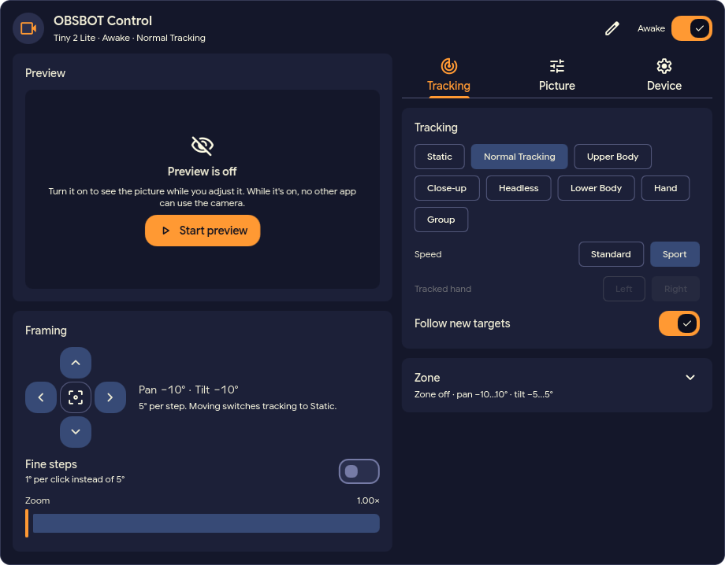

Debian, Ubuntu
curl -LO $DL/obsbot4linux_${VER}_amd64.deb
sudo apt install ./obsbot4linux_${VER}_amd64.deb
On ARM64 the file is obsbot4linux_${VER}_arm64.deb.
Unofficial, open source, for Linux
Switch AI tracking, move the gimbal, zoom, save presets and adjust picture, sound and sleep, from the terminal or from your desktop bar. Video calls and other apps keep streaming while you change settings.
Tested with the OBSBOT Tiny 2 Lite. Not affiliated with OBSBOT.
obsbot4linux changes every setting from the
terminal, with JSON output for scripts. A small background
service keeps the camera's state and shares it with every app
that asks. Works on any Linux desktop.
A bar widget, desktop widget and Control Center tile for the Dux
(DankMaterialShell) desktop shell, with a live preview. It uses
obsbot4linux underneath.
About the widget

Everything below works from the command line; the widget offers it with buttons and sliders.
Static, normal tracking, upper body, close-up, headless, lower body, hand and group. Choose the tracking speed, which hand to follow, and the area hand tracking works in.
Zoom from 1× to 4×, at once or smoothly. Set the field of view and how the automatic framing follows you: shot size, zoom speed, offset and which part of the body stays in frame.
Point the camera with pan and tilt, optionally at a set speed. Save, rename, recall and delete the three presets stored in the camera, plus named views. Choose the pose and tracking mode the camera starts with.
Limit tracking to an area, set the position the camera returns to when you leave it, and decide whether it then follows the next person.
HDR, automatic exposure for the whole picture or for faces, or manual shutter time and gain. Brightness, contrast, saturation, sharpness and backlight compensation, mirror and invert.
Microphone volume, noise reduction, pickup distance, automatic gain, and whether the microphone stays on while the camera sleeps.
Sleep and wake, an automatic sleep timer and the picture shown while asleep. Status LED brightness and blinking, gesture control and its zoom ratio, and a factory reset.
See whether an app is streaming from the camera and, where it can tell, which one: a browser, OBS or ffmpeg. The widget shows a red dot in the bar.
Every command prints JSON with --json.
obsbot4linux watch streams every state change as
JSON lines, and obsbot4linux detect tells whether a
supported camera is plugged in.
No account and no cloud: the tools talk to the camera and to apps on your own computer, nothing else.
One model is supported today. A model is listed here only once someone has tested it on a real camera.
| Camera | Status | Notes |
|---|---|---|
| Tiny 2 Lite | Tested | Firmware 6.2.8.1 |
| Other models | Not supported yet | Needs an owner to test |
If you own another OBSBOT model and can help test it,
open an issue
with the model name and the camera's line from lsusb.
Please do not attach logs or recordings to a public issue: they
can contain your camera's serial number.
Packages for x86_64 and ARM64 are attached to every
release, together with SHA256SUMS. Set VER once,
then use the lines for your system:
VER=0.13.2 # latest release, 2026-10-31
DL=https://github.com/hellwand/obsbot4linux/releases/download/v$VERcurl -LO $DL/obsbot4linux_${VER}_amd64.deb
sudo apt install ./obsbot4linux_${VER}_amd64.deb
On ARM64 the file is obsbot4linux_${VER}_arm64.deb.
curl -LO $DL/obsbot4linux-$VER-1.x86_64.rpm
sudo dnf install ./obsbot4linux-$VER-1.x86_64.rpm
On openSUSE use sudo zypper install. On ARM64 the
file is obsbot4linux-$VER-1.aarch64.rpm.
curl -LO $DL/obsbot4linux-$VER-1-x86_64.pkg.tar.zst
sudo pacman -U obsbot4linux-$VER-1-x86_64.pkg.tar.zst
On ARM64 the file is
obsbot4linux-$VER-1-aarch64.pkg.tar.zst.
curl -LO $DL/obsbot4linux-$VER-x86_64-linux.tar.gz
tar -xzf obsbot4linux-$VER-x86_64-linux.tar.gz
The tarball (aarch64 for ARM64) holds the binary
and the systemd user units. Put the binary on your
PATH and copy systemd/* to
~/.config/systemd/user/. If the binary is not in
/usr/bin, point the service at it as the
README
shows.
systemctl --user enable --now obsbot4linux.socket
The packages install the program and the user units but do not
enable anything. The socket starts the service when the first app
connects. Try it with obsbot4linux status.
There is no package repository yet: to update, install the package of the next release. To build from source you need Rust 1.88 or newer; see the README.
A plugin for the Dux (DankMaterialShell) desktop shell. It shows only the controls your camera supports, and changes made from the terminal show up in the widget at once.
obsbot4linux 0.7.3 or newer on your
PATH, installed as above. The widget checks this
when you enable it.
qt6-multimedia for the live preview. Without it
every other control still works.
Install OBSBOT Control from the DMS plugin browser, or by hand:
git clone https://github.com/hellwand/obsbot4linux-dux.git \
~/.config/dms/plugins/obsbot4linuxDux
dms ipc call plugins enable obsbot4linuxDux
Then add the obsbot4linuxDux widget to a bar in the
DMS settings. Update it with
dms plugins update obsbot4linuxDux.
Pre-1.0, single maintainer. Read the changelog before updating. Version 1.0 is being designed in the repository.